The following pictures show n tans (with short side 1) packed inside the smallest known octagons (with side s).
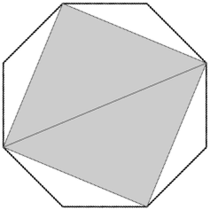 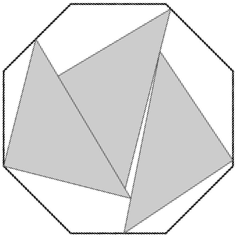 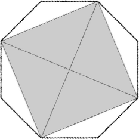 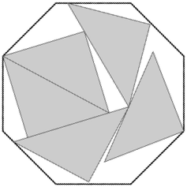 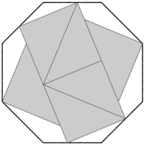 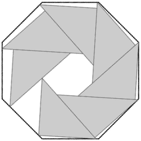 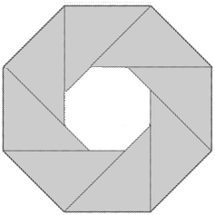 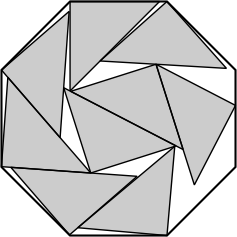 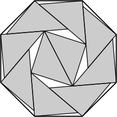 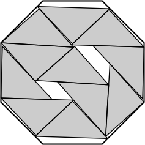 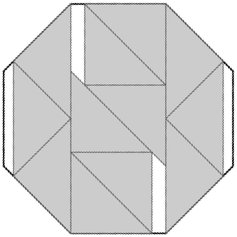 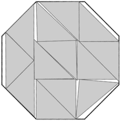 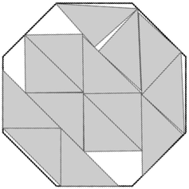 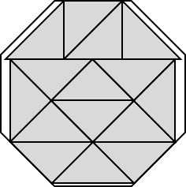 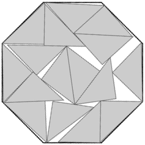 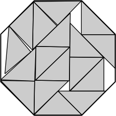 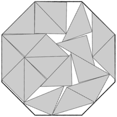 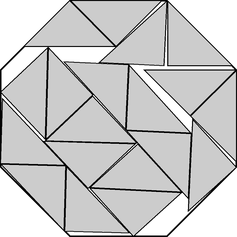 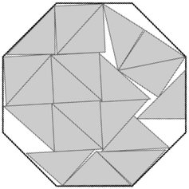
1.-2.
s = 1/√(2+√2) = .54119+
Trivial.
3.
s = .72389+
Found by Thomas Greenleaf
in June 2026.
4.
s = √(2–√2) = .76536+
Found by Thomas Greenleaf
in June 2026.
5.
s = .88072+
Found by Thomas Greenleaf
in June 2026.
6.
s = √(2+√2)/2 = .92388+
Found by Thomas Greenleaf
in June 2026.
7.
s = .98623+
Found by Thomas Greenleaf
in June 2026.
8.
s = 1
Trivial.
9.
s = 1.08295+
Found by Jake Loyd
in June 2026.
10.
s = 1.09348+
Found by Jake Loyd
in June 2026.
11.
s = 1.15384+
Found by Jake Loyd
in June 2026.
12.
s = 4–2√2 = 1.17157+
Found by Thomas Greenleaf
in June 2026.
13.
s = 1.21868+
Found by Jake Loyd
in June 2026.
14.
s = 3(√2–1) = 1.24264+
Found by Maurizio Morandi
in June 2026.
15.
s = 1.31145+
Found by Jake Loyd
in June 2026.
16.
s = 9/√2–5 = 1.36396+
Found by Jake Loyd
in June 2026.
17.
s = 1.39954+
Found by Jake Loyd
in June 2026.
18.
s = √2 = 1.41421+
Found by Jake Loyd
in June 2026.
19.
s = 1.48829+
Found by Jake Loyd
in June 2026.
20.
s = 35/3–43/3√2 = 1.53146+
Found by Jake Loyd
in June 2026.